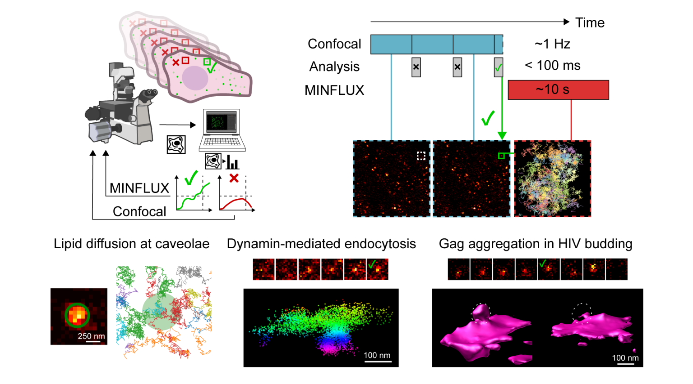

Event-triggered MINFLUX microscopy boosts speed and precision in live-cell imaging
New research in a preprint by Alvelid et al. (Friedrich Schiller University Jena, Leibniz Institute of Photonic Technology, Jena, Germany; SciLifeLab, KTH Royal Institute of Technology, Stockholm, Sweden) presents a new method for performing smart MINFLUX microscopy. The researchers developed the method to enhance the capabilities and range of applications of MINFLUX.
MINFLUX is a super-resolution microscopy method with powerful spatial and temporal resolution capabilities in tracking and imaging, but acquisition times spans minutes to hours as a single fluorophore is measured at a time. When measuring live cells, this can quickly become hindering, unless the microscopy is applied in a small region of interest. Ultimately, this limits the potential applications.
The new work implements event-triggered microscopy with confocal sample monitoring to detect cellular events in living cells through real-time image analysis. At the event sites, MINFLUX tracking is rapidly applied in a sub-micrometer-sized region of interest, exactly where and when it is the most beneficial. The method is controlled using a custom-written and standalone Python widget (based on the ImSwitch widget for event-triggered STED previously developed by Alvelid) that automatically controls a commercial Abberior MINFLUX microscope. The widget is open source and available on GitHub and uses the specpy Python API to microscope control software Imspector, allowing a wide range of users to take advantage of the method.
In the work, the method was applied to look at three diverse biological applications in living cells: lipid diffusion dynamics were investigated in 2D at caveolae sites; the 3D membrane topography was rapidly measured through lipid tracking at developing endosomes following dynamin accumulation, allowing high precision geometrical measurements of the endosomal heads; and lastly the measurement of 3D membrane topographical and diffusional information simultaneously at multiple event sites allowed to follow HIV budding from an early stage as it develops after Gag accumulation. Overall, the applications prove the generalizability of the method to both follow development on the minutes scale of processes as well as catching second-scale dynamics of cellular events otherwise impossible to acquire through manual control, all while minimizing sample light exposure and maximizing useful data throughput. Importantly, budding endosomes and viruses were imaged in 3D in living cells for the first time, even in physiological conditions.